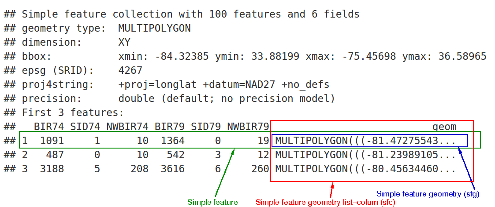
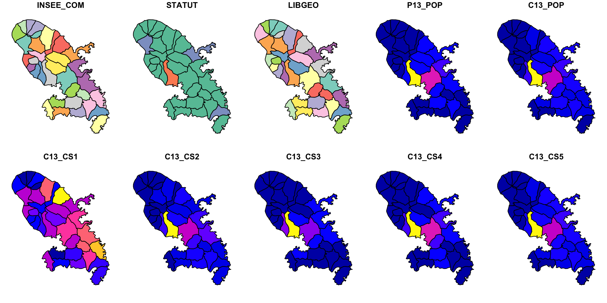
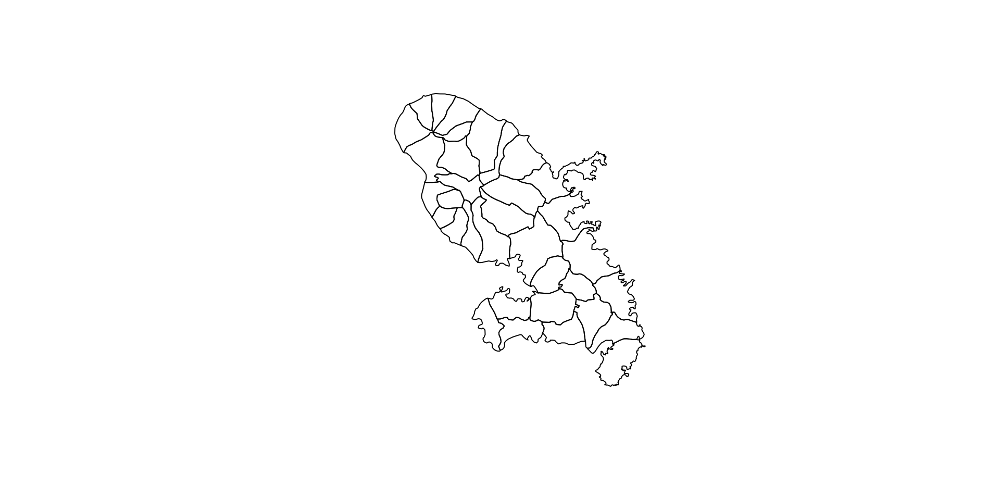
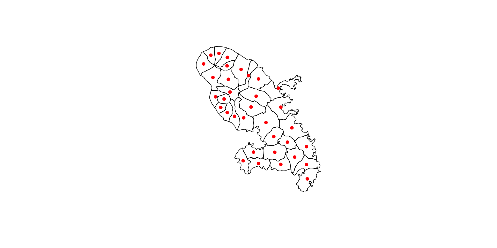
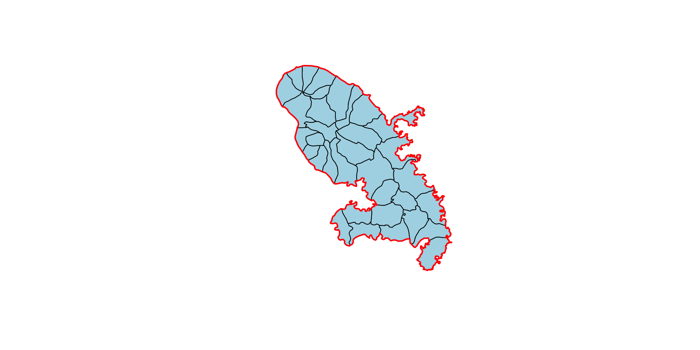
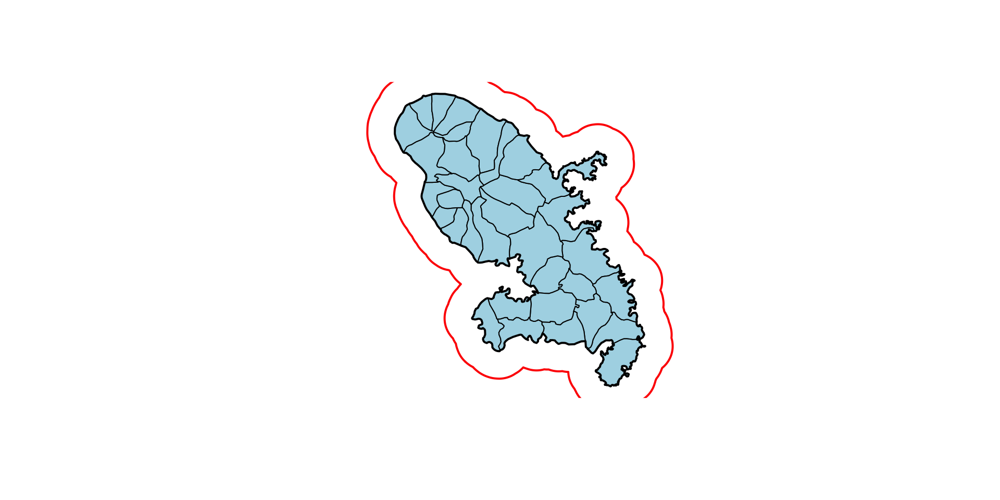
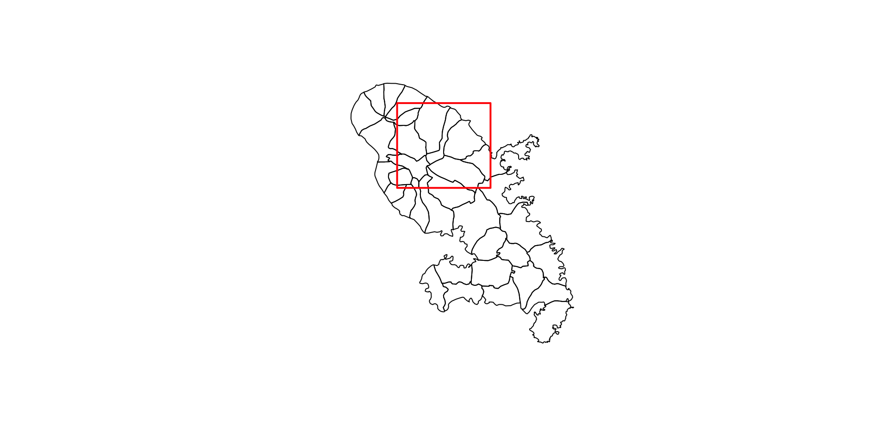
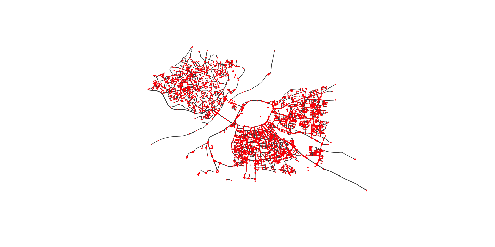

Atelier R Statistique spatiale et Cartographie
Rencontres R Juin 2023
L’écosystème spatial sur R
Introduction à sf
Site web de
sf: Simple Features for Rsf pour Simple Features
A pour but de rassembler les fonctionnalités d’anciens packages (
sp,rgeosandrgdal) en un seulFacilite la manipulation de données spatiales, avec des objets simples.
Tidy data: compatible avec la syntaxe pipe
|>et les opérateurs dutidyverse.Principal auteur et mainteneur : Edzer Pebesma (également auteur du package
sp)
Structure d’un objets sf :
Importer / exporter des données
Importer
Reading layer `martinique' from data source
`/Users/runner/work/RR2023_tuto_statspatiale/RR2023_tuto_statspatiale/lecture/data/mtq/martinique.shp'
using driver `ESRI Shapefile'
Simple feature collection with 34 features and 23 fields
Geometry type: POLYGON
Dimension: XY
Bounding box: xmin: 690574.4 ymin: 1592426 xmax: 736126.5 ymax: 1645660
Projected CRS: WGS 84 / UTM zone 20NExporter
Le format gpkg (geopackage) est ouvert (non lié à un système d’exploitation) et implémenté sous la forme d’une base de données SQLite.
Noter également l’existence du format GeoParquet extrêmement efficace pour traiter de gros volumes de données spatiales.
Système de coordonnées
Les projections/systèmes de coordonnées sont répertoriés grâce à un code appelé code epsg :
- lat/long : 4326 https://epsg.io/4326
- Lambert 93 : 2154 https://epsg.io/2154
- Pseudo-Mercator : 3857 https://epsg.io/3857
- Lambert azimuthal equal area : 3035 https://epsg.io/3035
Projection
Obtenir la projection en utilisant st_crs() (code epsg) et la modifier en utilisant st_transform().
sf utilise la géométrie sphérique par défaut pour les données non projetées depuis la version 1.0 grâce à la librairie s2. Voir sur https://r-spatial.github.io pour plus de détails.
Coordinate Reference System:
User input: WGS 84 / UTM zone 20N
wkt:
PROJCRS["WGS 84 / UTM zone 20N",
BASEGEOGCRS["WGS 84",
DATUM["World Geodetic System 1984",
ELLIPSOID["WGS 84",6378137,298.257223563,
LENGTHUNIT["metre",1]]],
PRIMEM["Greenwich",0,
ANGLEUNIT["degree",0.0174532925199433]],
ID["EPSG",4326]],
CONVERSION["UTM zone 20N",
METHOD["Transverse Mercator",
ID["EPSG",9807]],
PARAMETER["Latitude of natural origin",0,
ANGLEUNIT["Degree",0.0174532925199433],
ID["EPSG",8801]],
PARAMETER["Longitude of natural origin",-63,
ANGLEUNIT["Degree",0.0174532925199433],
ID["EPSG",8802]],
PARAMETER["Scale factor at natural origin",0.9996,
SCALEUNIT["unity",1],
ID["EPSG",8805]],
PARAMETER["False easting",500000,
LENGTHUNIT["metre",1],
ID["EPSG",8806]],
PARAMETER["False northing",0,
LENGTHUNIT["metre",1],
ID["EPSG",8807]]],
CS[Cartesian,2],
AXIS["(E)",east,
ORDER[1],
LENGTHUNIT["metre",1]],
AXIS["(N)",north,
ORDER[2],
LENGTHUNIT["metre",1]],
ID["EPSG",32620]]Afficher les données
Affichage par défaut :
En ne gardant que la géométrie :
Extraire les centroïdes
Matrice de distance
Units: [m]
[,1] [,2] [,3] [,4] [,5]
[1,] 0.000 35297.56 3091.501 12131.617 17136.310
[2,] 35297.557 0.00 38332.602 25518.913 18605.249
[3,] 3091.501 38332.60 0.000 15094.702 20226.198
[4,] 12131.617 25518.91 15094.702 0.000 7177.011
[5,] 17136.310 18605.25 20226.198 7177.011 0.000Agrégation de polygones
Union simple :
A partir d’une variable de regroupement :
Zone tampon
Intersection de polygones
On crée un polygone.
st_intersection() extrait la partie de mtq qui s’intersecte avec le polygone créé.
Compter les points dans des polygones
st_sample() crée des points aléatoires sur la carte.
st_join permet d’effectuer une jointure spatiale couplée d’une agrégation.
Il est possible de contrôler finement la jointure (points sur les frontières, …) avec l’argument join qui par défaut est fixé à st_intersects(). Voir ici pour une définition précise des prédicats spatiaux possibles.
Simple feature collection with 3 features and 1 field
Geometry type: POLYGON
Dimension: XY
Bounding box: xmin: 697601.7 ymin: 1598817 xmax: 710461.9 ymax: 1640521
Projected CRS: WGS 84 / UTM zone 20N
INSEE_COM geometry
1 97201 POLYGON ((699261.2 1637681,...
2 97202 POLYGON ((709840 1599026, 7...
2.1 97202 POLYGON ((709840 1599026, 7...Simple feature collection with 6 features and 2 fields
Geometry type: POLYGON
Dimension: XY
Bounding box: xmin: 695444.4 ymin: 1598817 xmax: 717731.2 ymax: 1645182
Projected CRS: WGS 84 / UTM zone 20N
INSEE_COM n geometry
1 97201 1 POLYGON ((699261.2 1637681,...
2 97202 2 POLYGON ((709840 1599026, 7...
3 97203 4 POLYGON ((706092.8 1642964,...
4 97204 1 POLYGON ((697314.8 1623213,...
5 97205 1 POLYGON ((702756.8 1617978,...
6 97206 1 POLYGON ((709840 1599026, 7...Polygones de Voronoï
Un diagramme de Voronoï est un découpage du plan en cellules (régions adjacentes, appelées polygones de Voronoï) à partir d’un ensemble discret de points. Chaque cellule enferme un seul point, et forme l’ensemble des points du plan qui sont plus proches de ce point que d’aucun autre.
Autres traitements
- st_area(x)
- st_length(x)
- st_disjoint(x, y, sparse = FALSE)
- st_touches(x, y, sparse = FALSE)
- st_crosses(s, s, sparse = FALSE)
- st_within(x, y, sparse = FALSE)
- st_contains(x, y, sparse = FALSE)
- st_overlaps(x, y, sparse = FALSE)
- st_equals(x, y, sparse = FALSE)
- st_covers(x, y, sparse = FALSE)
- st_covered_by(x, y, sparse = FALSE)
- st_equals_exact(x, y,0.001, sparse = FALSE)
- …
Conversion
- st_cast
- st_collection_extract
- st_sf
- st_as_sf
- st_as_sfc
Faire des cartes interactives et statiques
Dans cette partie, nous allons visualiser des données d’accidents corporels de la circulation routière de 2019.
Il s’agit d’un data.frame comportant notamment deux colonnes renseignant sur la latitude et longitude des accidents de la route.
# A tibble: 6 × 13
Num_Acc id_vehicule grav sexe an_nais lat long com int lum voie
<dbl> <chr> <dbl> <fct> <dbl> <dbl> <dbl> <chr> <fct> <fct> <chr>
1 2.02e11 138 305 660 1 Fémi… 1983 48.9 2.28 75117 Inte… Nuit… BD P…
2 2.02e11 138 305 661 4 Masc… 1975 48.9 2.28 75117 Inte… Nuit… BD P…
3 2.02e11 138 305 658 4 Fémi… 1988 48.8 2.41 75120 Inte… Nuit… COUR…
4 2.02e11 138 305 658 1 Masc… 1991 48.8 2.41 75120 Inte… Nuit… COUR…
5 2.02e11 138 305 658 4 Masc… 1987 48.8 2.41 75120 Inte… Nuit… COUR…
6 2.02e11 138 305 659 1 Masc… 1996 48.8 2.41 75120 Inte… Nuit… COUR…
# ℹ 2 more variables: catr <fct>, catv <fct>Il faut convertir ce data.frame en objet spatial (sf) grâce à la fonction st_as_sf. Il suffit de spécifier le nom des colonnes contenant les coordonnées ainsi que la projection, ici CRS = 4326 (WGS 84). On transforme ensuite ces données en CRS = 2154 (Lambert 93).
Cartes interactives
Plusieurs solutions existent pour faire des cartes interactives avec R. mapview, leaflet et mapdeck sont les principales. Par simplicité, nous nous concentrons ici sur mapview.
Les cartes interactives ne sont pas forcément très pertinentes pour représenter des informations géostatistiques. En revanche, elles sont utiles pour explorer les bases de données. Voyons un exemple avec mapview concernant les accidents mortels à Paris en 2019.
Quand on clique sur un point, la valeur des différentes variables de la base de données apparaissent. Cela peut aider à l’exploration de la base de données. On customise un peu…
On customise encore un peu plus…
Toutefois, ajouter une légende pour la taille des ronds proportionnels ne se fait pas facilement.
Cartes statiques avec ggplot2
Là encore, différents packages R sont utilisés pour faire des cartes statiques :
ggplot2est un package très utilisé pour faire tous types de graphiques, et a été adapté spécifiquement aux cartes (geom_sf).- Le package
tmapcontient des fonctionnalités avancées basées sur la logique deggplot2 mapsf(successeur decartography) s’appuie sur un langage dit “base R” et permet de faire des représentations cartographiques, basiques comme avancées.
Par simplicité, nous nous concentrons ici sur ggplot2, package très renommé pour tous types de graphiques.
La grammaire des graphiques
- Wilkinson, L., Anand, A., & Grossman, R. (2005). Graph-theoretic scagnostics. In Information Visualization, IEEE Symposium on (pp. 21-21). IEEE Computer Society.
- Repris par Wickham, H. (2010). A layered grammar of graphics. Journal of Computational and Graphical Statistics, 19(1), 3-28. Et implémenté dans
ggplot2 - grammaire → même type de construction / philosophie pour tous les types de graphiques
Composantes de la grammaire
- données et caractères esthétiques (aes)
Ex : f(data) → x position, y position, size, shape, color
- Objets géométriques
Ex : points, lines, bars, texts
- échelles (scales)
Ex : f([0, 100]) → [0, 5] px
- Spécification des composantes (facet)
Ex : Segmentation des données suivant un ou plusieurs facteurs
- Transformation statistique
Ex : moyenne, comptage, régression…
- Le système de coordonnées
Intégrer des données spatiales avec geom_sf
Petite introduction / rappel de sémiologie graphique :

On travaille avec la couche cartographique des IRIS1.
Reading layer `iris_75' from data source
`/Users/runner/work/RR2023_tuto_statspatiale/RR2023_tuto_statspatiale/lecture/data/iris_75.shp'
using driver `ESRI Shapefile'
Simple feature collection with 992 features and 2 fields
Geometry type: MULTIPOLYGON
Dimension: XY
Bounding box: xmin: 643075.6 ymin: 6857477 xmax: 661086.2 ymax: 6867081
Projected CRS: RGF93 v1 / Lambert-93Comptons par iris le nombre de personnes accidentées (nbacc) ;
acc_iris <- iris.75 |> st_join(accidents.2019.paris) |>
group_by(CODE_IRIS) |> dplyr::summarize(nb_acc = n(),
nb_acc_grav = sum(if_else(grav%in%c(2,3), 1, 0),
na.rm = TRUE),
nb_vl = sum(if_else(catv == "VL seul", 1, 0),
na.rm = TRUE),
nb_edp = sum(if_else(catv == "EDP à moteur", 1, 0),
na.rm = TRUE),
nb_velo = sum(if_else(catv == "Bicyclette", 1, 0),
na.rm = TRUE)
)
head(acc_iris,1)Simple feature collection with 1 feature and 6 fields
Geometry type: MULTIPOLYGON
Dimension: XY
Bounding box: xmin: 651771.6 ymin: 6862103 xmax: 652179 ymax: 6862406
Projected CRS: RGF93 v1 / Lambert-93
# A tibble: 1 × 7
CODE_IRIS nb_acc nb_acc_grav nb_vl nb_edp nb_velo geometry
<chr> <int> <dbl> <dbl> <dbl> <dbl> <MULTIPOLYGON [m]>
1 751010101 27 1 11 1 4 (((652130.3 6862122, 652126…Cartes avec ronds proportionnels
Code
library(ggplot2)
ggplot() +
geom_sf(data = acc_iris, colour = "ivory3", fill = "ivory") +
geom_sf(data = acc_iris |> st_centroid(),
aes(size= nb_acc), colour="#E84923CC", show.legend = 'point') +
scale_size(name = "Nombre d'accidents",
breaks = c(1,10,100,200),
range = c(0,5)) +
coord_sf(crs = 2154, datum = NA,
xlim = st_bbox(iris.75)[c(1,3)],
ylim = st_bbox(iris.75)[c(2,4)]) +
theme_minimal() +
theme(panel.background = element_rect(fill = "ivory",color=NA),
plot.background = element_rect(fill = "ivory",color=NA),legend.position = "bottom") +
labs(title = "Nombre d'accidents de la route à Paris par iris",
caption = "fichier BAAC 2019, ONISR\nantuki & comeetie, 2023",x="",y="")Cartes choroplèthes
Code
library(RColorBrewer) #pour les couleurs des palettes
# Quintiles de la part des accidents ayant eu lieu à vélo
perc_velo = 100*acc_iris$nb_velo/acc_iris$nb_acc
bks <- c(0,round(quantile(perc_velo[perc_velo!=0],na.rm=TRUE,probs=seq(0,1,0.25)),1))
# Intégration dans la base de données
acc_iris <- acc_iris |> mutate(txaccvelo = 100*nb_velo/nb_acc,
txaccvelo_cat = cut(txaccvelo,bks,include.lowest = TRUE))
# Carte
ggplot() +
geom_sf(data = iris.75,colour = "ivory3",fill = "ivory") +
geom_sf(data = acc_iris, aes(fill = txaccvelo_cat)) +
scale_fill_brewer(name = "Part (En %)",
palette = "Reds",
na.value = "grey80") +
coord_sf(crs = 2154, datum = NA,
xlim = st_bbox(iris.75)[c(1,3)],
ylim = st_bbox(iris.75)[c(2,4)]) +
theme_minimal() +
theme(panel.background = element_rect(fill = "ivory",color=NA),
plot.background = element_rect(fill = "ivory",color=NA),legend.position="bottom") +
labs(title = "Part des accidentés à vélos",
subtitle = "par arrondissement à Paris en 2019",
caption = "fichier BAAC 2019, ONISR\nantuki & comeetie, 2023",
x = "", y = "")Carte avec mapsf
Ci-dessous un exemple de carte similaire réalisée avec la syntaxe de la librairie mapsf
Code
library(mapsf)
mf_theme("default",cex=0.9,mar=c(0,0,1.2,0),bg="ivory")
mf_init(x = acc_iris, expandBB = c(0, 0, 0, .15))
mf_map(acc_iris,add = TRUE,col = "ivory2")
# Plot symbols with choropleth coloration
mf_map(
x = acc_iris |> st_centroid(),
var = c("nb_acc", "txaccvelo"),
type = "prop_choro",
border = "grey50",
lwd = 0.1,
leg_pos = c("topright","right"),
leg_title = c("Nombre d'accidents", "Part des accidentés à vélo"),
breaks = c(0,8,15,25,100),
nbreaks = 5,
inches= 0.16,
pal = "Reds",
leg_val_rnd = c(0, 0),
leg_frame = c(TRUE, TRUE)
)
mf_layout(
title = "Nombre d'accidents de la route et proportion d'accidents impliquant des vélos",
credits = "fichier BAAC 2019, ONISR\nantuki & comeetie, 2023",
frame = TRUE)Pour aller plus loin
Lissage spatial
avec le package btb

Données raster

Géocodage
banRettidygeocoder
library(dplyr, warn.conflicts = FALSE)
library(tidygeocoder)
# create a dataframe with addresses
addresses <- tibble::tribble(
~name, ~addr,
"Campus Hannah-Arendt", "74 Rue Louis Pasteur, 84029 Avignon",
"palais des Papes", "Pl. du Palais, 84000 Avignon"
)
# geocode the addresses
lat_longs <- addresses |>
tidygeocoder::geocode(addr, method = 'osm')
lat_longs# A tibble: 2 × 4
name addr lat long
<chr> <chr> <dbl> <dbl>
1 Campus Hannah-Arendt 74 Rue Louis Pasteur, 84029 Avignon 43.9 4.82
2 palais des Papes Pl. du Palais, 84000 Avignon 44.0 4.81Données OSM
plot(roads$osm_lines |> dplyr::filter(highway=="primary") |> st_geometry(),lwd=1.5,col="#000000")
plot(roads$osm_lines |> dplyr::filter(highway=="secondary") |> st_geometry(),lwd=1,add=TRUE,col="blue")
plot(roads$osm_lines |> dplyr::filter(highway=="tertiary" | highway=="residential" ) |> st_geometry(),add=TRUE,col="orange")
plot(roads$osm_lines |> dplyr::filter(highway=="living_street" ) |> st_geometry(),add=TRUE,col="red")Réseaux linéaires et graphes
Cartographie interactive

Ressources
CRAN task views permet d’avoir des informations sur les packages du CRAN pertinents pour des tâches reliées à certains sujets.
CRAN Task View: Analysis of Spatial Data:
- Classes for spatial data
- Handling spatial data
- Reading and writing spatial data
- Visualisation
- Point pattern analysis
- Geostatistics
- Disease mapping and areal data analysis
- Spatial regression
- Ecological analysis
Crédits et reproductibilité
Cette formation s’inspire, ainsi que son tutoriel, d’une précédente formation donnée par les mêmes auteurs avec Timothée Giraud.
Partage de la configuration de R et des packages utilisés :
R version 4.3.1 (2023-06-16)
Platform: x86_64-apple-darwin20 (64-bit)
Running under: macOS Monterey 12.6.5
Matrix products: default
BLAS: /Library/Frameworks/R.framework/Versions/4.3-x86_64/Resources/lib/libRblas.0.dylib
LAPACK: /Library/Frameworks/R.framework/Versions/4.3-x86_64/Resources/lib/libRlapack.dylib; LAPACK version 3.11.0
locale:
[1] en_US.UTF-8/en_US.UTF-8/en_US.UTF-8/C/en_US.UTF-8/en_US.UTF-8
time zone: UTC
tzcode source: internal
attached base packages:
[1] stats graphics grDevices datasets utils methods base
other attached packages:
[1] btb_0.2.0 mapsf_0.6.1 tidygeocoder_1.0.5 remotes_2.4.2
[5] tidygraph_1.2.3 sfnetworks_0.6.3 ggspatial_1.1.8 readr_2.1.4
[9] ggplot2_3.4.2 RColorBrewer_1.1-3 osmdata_0.2.3 sf_1.0-13
[13] mapview_2.11.0 dplyr_1.1.2
loaded via a namespace (and not attached):
[1] tidyselect_1.2.0 farver_2.1.1 fastmap_1.1.1
[4] leaflet_2.1.2 digest_0.6.31 timechange_0.2.0
[7] lifecycle_1.0.3 ellipsis_0.3.2 terra_1.7-36
[10] magrittr_2.0.3 compiler_4.3.1 rlang_1.1.1
[13] tools_4.3.1 leafpop_0.1.0 igraph_1.5.0
[16] utf8_1.2.3 yaml_2.3.7 knitr_1.43
[19] brew_1.0-8 htmlwidgets_1.6.2 curl_5.0.1
[22] sp_1.6-1 classInt_0.4-9 xml2_1.3.4
[25] KernSmooth_2.23-21 withr_2.5.0 purrr_1.0.1
[28] grid_4.3.1 stats4_4.3.1 fansi_1.0.4
[31] e1071_1.7-13 leafem_0.2.0 colorspace_2.1-0
[34] scales_1.2.1 cli_3.6.1 rmarkdown_2.22
[37] crayon_1.5.2 generics_0.1.3 RcppParallel_5.1.7
[40] rstudioapi_0.14 httr_1.4.6 tzdb_0.4.0
[43] DBI_1.1.3 proxy_0.4-27 s2_1.1.4
[46] base64enc_0.1-3 vctrs_0.6.3 webshot_0.5.4
[49] jsonlite_1.8.5 hms_1.1.3 systemfonts_1.0.4
[52] crosstalk_1.2.0 tidyr_1.3.0 units_0.8-2
[55] glue_1.6.2 lwgeom_0.2-13 codetools_0.2-19
[58] leaflet.providers_1.9.0 lubridate_1.9.2 gtable_0.3.3
[61] raster_3.6-20 munsell_0.5.0 tibble_3.2.1
[64] pillar_1.9.0 rappdirs_0.3.3 htmltools_0.5.5
[67] satellite_1.0.4 httr2_0.2.3 R6_2.5.1
[70] wk_0.7.3 sfheaders_0.4.2 evaluate_0.21
[73] lattice_0.21-8 png_0.1-8 renv_0.17.3
[76] class_7.3-22 Rcpp_1.0.10 uuid_1.1-0
[79] svglite_2.1.1 xfun_0.39 pkgconfig_2.0.3